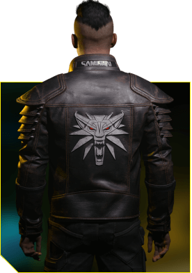
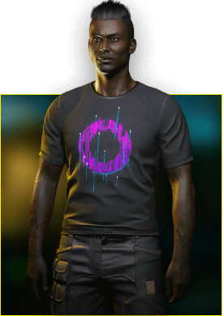
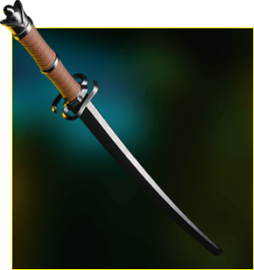
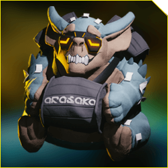
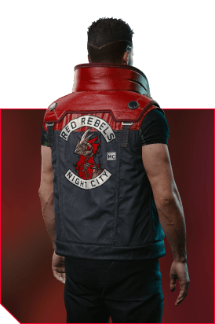
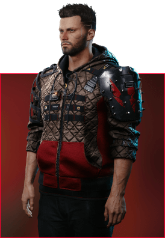
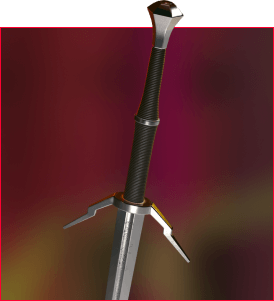
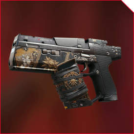
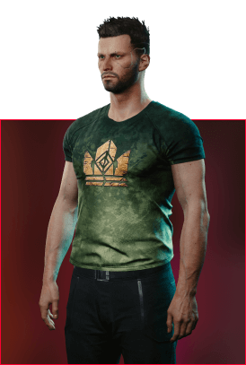

Yes, all platforms will allow players to take advantage of MY REWARDS in Cyberpunk 2077. This includes when playing the Xbox One and PlayStation 4 versions of the game on Xbox Series X and PlayStation 5 via backwards compatibility.
INTRO
Welcome to MY REWARDS. As a token of thanks for playing our games, you can
register for MY REWARDS to claim unique in-game swag & digital goodies for
Cyberpunk 2077 and the spy-thriller adventure Phantom Liberty!
IN-GAMES-SWAG
AVAILABLE FOR CYBERPUNK 2077 PLAYERS WHO REGISTER FOR MY
REWARDS

WOLF SCHOOL JACKET
Want your V to look like a badass modern monster slayer? Then this is the jacket for you!

GALAXY T-SHIRT
A good ol’ t-shirt, maybe even the best one in the whole galaxy. Add this to V’s wardrobe for a look that’s truly out of this world!
WOLF SCHOOL T-SHIRT
Casually show off your monster-slaying expertise as you stroll the Night City streets.

BLACK UNICORN
Get up close and personal with this cutting-edge take on a bladed classic.

SHUPE THE TROLL PLUSHY
Bring a warm and cuddly touch to the world of the dark future — well, into V’s apartment at least.
AVAILABLE FOR PHANTOM LIBERTY PLAYERS WHO REGISTER FOR MY
REWARDS

RAROG VEST
Wear the spirit of rebellion for all Night City to see! Available in Cyberpunk 2077: Phantom Liberty.

WILD HUNT JACKET
The White Frost will never touch you in this jacket. Available in Cyberpunk 2077: Phantom Liberty for The Witcher 3: Wild Hunt players.

GWYNBLEIDD
Wield the sword inspired by the legendary White Wolf himself, and slay your foes without mercy. Available in Cyberpunk 2077: Phantom Liberty for The Witcher 3: Wild Hunt players.

SCORCH
Play your cards right and unleash hellfire on your enemies! Available in Cyberpunk 2077: Phantom Liberty.

GWENT T-SHIRT
When battle beckons, reach for your deck and equip this stylish t-shirt. Night City won’t know what hit it. Available in Cyberpunk 2077: Phantom Liberty.
DIGITAL GOODIES
Log in to MY REWARDS at cyberpunk.net/myrewards to claim these digital goodies -
available
to everyone who owns Cyberpunk 2077.
CYBERPUNK 2077 GOODIES:
ORIGINAL SCORE
CYBERPUNK 2020
SOURCEBOOK
ART BOOKLET
Featuring a selection of art
from the game
WALLPAPERS
For desktop and mobile
DIGITAL COMIC
Cyberpunk 2077: Your voice
PHANTOM LIBERTY-INSPIRED GOODIES:
ORIGINAL SCORE
TAPES OF NIGHT CITY
Chill and Lo-Fi remixes of tracks from
Cyberpunk 2077 and
Phantom Liberty
DIGITAL COMIC
Cyberpunk 2077: Phantom Liberty -
Ten of Swords
CONCEPT ARTS & AVATARS
Concept arts in wallpaper formats for
desktop &
mobile
HERE’S HOW IT WORKS
SELECT PLATFORM YOU’RE USING TO PLAY CYBERPUNK 2077
After installing the game, log in to REDlauncher using your CD PROJEKT RED account.
Simply follow these steps to claim the related rewards:
CLAIM YOUR DIGITAL GOODIES
Log in to MY REWARDS at cyberpunk.net/myrewards.
Download all your digital goodies at cyberpunk.net/goodies!
CLAIM YOUR IN-GAME SWAG
Launch Cyberpunk 2077 via REDlauncher and start playing. Your rewards will be waiting for you in the item stash located in V’s apartment.
CLAIM YOUR CYBERPUNK 2077: PHANTOM LIBERTY IN-GAME SWAG
Rarog Vest: Launch Cyberpunk 2077: Phantom Liberty via REDlauncher and start playing. Your swag will be waiting for you in the item stash located in V’s apartment.
Wild Hunt Jacket, Gwynbleidd, Scorch and GWENT T-shirt: Launch Cyberpunk 2077: Phantom Liberty via REDlauncher, with The Witcher 3: Wild Hunt in your library, and start playing. Your swag will be waiting for you in the item stash located in V’s apartment.
DIGITAL COMIC CODE REDEMPTION INSTRUCTIONS
Go to [DOWNLOAD GOODIES] and log in with your CD PROJEKT RED account to get your unique redemption code.
Go to https://digital.darkhorse.com/cyberpunk2077
Create or sign in to a Dark Horse Digital account.
Enter the code in the space provided.
Enjoy your free digital Ten of Swords comic! Read it on the Dark Horse Digital site, or download to the iOS or Android app.
Terms of Service: https://digital.darkhorse.com/terms-of-service/
Start date for codes: 14.09.2023
FAQ
Is MY REWARDS available for Cyberpunk 2077 on all platforms?
Do I have to start a new game to claim my rewards?
No, you can claim your rewards at any time, regardless of how far you’ve progressed into Cyberpunk 2077.
Where will I find the rewards received via MY REWARDS?
Unless stated otherwise in the item’s description, you’ll find all items claimed via MY REWARDS in the stash located in V’s apartment.
Do I have to be connected to the internet in order to participate in the MY REWARDS?
An internet connection is required to register a CD PROJEKT RED account, log in to REDlauncher (PC) / register Cyberpunk 2077 (Xbox, PlayStation, Stadia) and claim your rewards. Once claimed, however, rewards will be yours to keep regardless of whether you’re playing online or offline.
Is MY REWARDS also available on the local version of Cyberpunk 2077 — which can be downloaded via GOG and installed separately from GOG GALAXY?
Because MY REWARDS requires an internet connection, the local version of Cyberpunk 2077 that you can download via GOG will not support MY REWARDS.
I don’t have a CD PROJEKT RED account. Can I still sign up for MY REWARDS?
MY REWARDS requires a CD PROJEKT RED account. If you don’t have a CD PROJEKT RED account, you will be able to create one for free during the registration process.
Can I unlink my CD PROJEKT RED account from Cyberpunk 2077 and then link it with another one?
You can only register to Cyberpunk 2077 MY REWARDS with a single CD PROJEKT RED account once.
I previously played Cyberpunk 2077 on platform A and connected my in-game profile with my CD PROJEKT RED account. Now I own and play Cyberpunk 2077 on platform B. Can I connect this in-game profile from platform B with my CD PROJEKT RED account again?
Yes, you can.
I only own Cyberpunk 2077; can I claim digital goodies inspired by Phantom Liberty?
You can! All you need to do is log in to MY REWARDS at cyberpunk.net/goodies and you’re good to go.
I only own Cyberpunk 2077; can I claim in-game swag for Phantom Liberty?
No; in-game swag for Phantom Liberty is only available for players who own Phantom Liberty.
Is the in-game Phantom Liberty swag available on Xbox One/PlayStation 4?
Because Cyberpunk 2077: Phantom Liberty is only available for PC, Xbox Series X|S, and PlayStation 5, in-game Phantom Liberty swag is only available on those platforms. However, Cyberpunk 2077 in-game swag is available on all platforms.